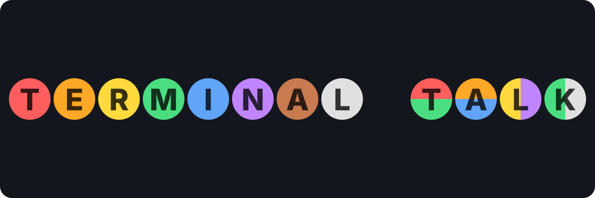
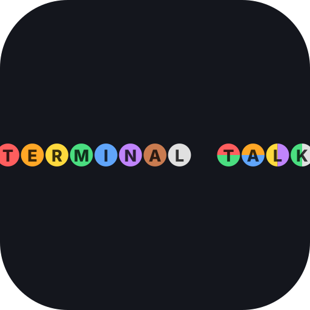
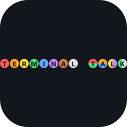

Primary mark · 1200 × 400 banner

TERMINAL TALK — lettered dots
Twelve dots across one row, each holding a letter. No pill, no wordmark behind the dots — the dots are the wordmark. The 8-hue palette cycles through T E R M I N A L, and the cycle restarts on T A L K — same sequence, same system, quiet visual rhyme.
- Layout
- 12 dots · 1 gap · 80px pitch @ 1200 wide
- Dot
- r=38 · raised (dy=2, blur=3, α=0.35)
- Letter
- Segoe UI · 800 · 48px · rgba(0,0,0,0.82)
- Palette
- 8-session hues · cycle wraps after TERMINAL
- Source
- Pure SVG · resolution-independent
Size ladder · squares + favicon
1024 × 1024
npm / GitHub repo avatar ·
app icon primary export
app icon primary export

512 × 512
Social avatar · store listings

256 × 256
macOS / Linux dock-icon tier
32 × 32 · favicon
Lettered dots are illegible this small ·
use the 4-dot pill (secondary) instead
use the 4-dot pill (secondary) instead
Social card · 1200 × 630 · OG / Twitter / LinkedIn
In context
benfrancisburns-creator/terminal-talk
Hands-free voice workflow for Claude Code
GitHub repo · 40px avatar
macOS / Linux dock · 88px
terminal-talk — voice for Claude Code
Browser tab · 16px favicon (4-dot pill)
Secondary marks · use where the lettered dots don't fit
4-dot pill — favicon & tray icon
At 32px the lettered dots are illegible. The 4-dot pill stands in: a miniature of the product's own toolbar silhouette with red → orange → yellow → green dots across it. Strictly for small-size contexts (favicon, system-tray, taskbar thumbnail).
ASCII banner — docs & About panel
The block-letter ASCII banner stays the in-product voice: it renders in the About panel, in docs headings, in the landing hero where the tone is "maintainer's README". Canonical, rendered in Cascadia Mono.
████████╗███████╗██████╗ ███╗ ███╗██╗███╗ ██╗ █████╗ ██╗ ████████╗ █████╗ ██╗ ██╗ ██╗ ╚══██╔══╝██╔════╝██╔══██╗████╗ ████║██║████╗ ██║██╔══██╗██║ ╚══██╔══╝██╔══██╗██║ ██║ ██╔╝ ██║ █████╗ ██████╔╝██╔████╔██║██║██╔██╗ ██║███████║██║ ██║ ███████║██║ █████╔╝ ██║ ██╔══╝ ██╔══██╗██║╚██╔╝██║██║██║╚██╗██║██╔══██║██║ ██║ ██╔══██║██║ ██╔═██╗ ██║ ███████╗██║ ██║██║ ╚═╝ ██║██║██║ ╚████║██║ ██║███████╗ ██║ ██║ ██║███████╗██║ ██╗ ╚═╝ ╚══════╝╚═╝ ╚═╝╚═╝ ╚═╝╚═╝╚═╝ ╚═══╝╚═╝ ╚═╝╚══════╝ ╚═╝ ╚═╝ ╚═╝╚══════╝╚═╝ ╚═╝
Downloads · all SVG, resolution-independent
{kind=link}
{kind=link}
{kind=link}
{kind=link}
{kind=link}
{kind=link}